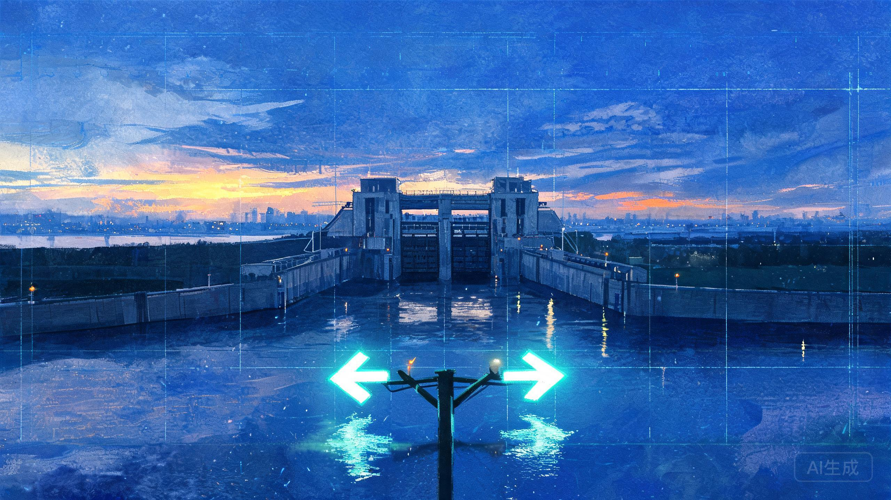

条件与分支
程序不是一条道走到黑——if / else 让代码学会「看情况办事」。这是所有程序逻辑的骨架。

程序每天都在「看情况办事」
汛期的水闸怎么决定开不开？先看水位：超过警戒线就泄洪，没超过就继续等。程序里的「条件与分支」就是这套思路——if 读作"如果"，else 读作"否则"，代码在岔路口自己选路。
这一课你将学会写岔路（if / elif / else）、给条件做比较（>、==）、把多个条件拼起来（and、or），最后亲手指挥一次"数字水闸"。Python 靠冒号和缩进分层，不用写大括号。
if / elif / else 岔路
条件是 True 走第一段，否则走 else 段；elif（"否则如果"）能串多个档位，自上而下命中一个就停。行尾冒号加缩进 4 格就是 Python 的层级。
if a > 10:
…
else:
…
比较运算符
>、<、>=、<= 之外，== 判断相等、!= 判断不等。小心：= 是赋值，== 才是比较，少写一个等号意思全变。
if score == 100:
逻辑运算符
and 与：两边都 True 才 True；or 或：一边 True 就 True；not 非：取反。它们把多个条件拼成一条，念出来就是人话。
if a > 0 and b > 0:
真值与假值
Python 里 0、""（空串）、None 在条件里都当 False，其余大多为真。所以 if 0: 永远走 else——和生活的直觉一致。
if 0: # 永远不执行
改代码，命中目标输出（0 / 3）
看到红色报错不要慌——读报错信息是程序员的日常。改错了随时「还原」。
任务 1 · 汛期水闸
昨夜一场大雨，长江水位涨到 12，超过了警戒线 10。把 water_level 改成 12，if 一眼就能看出「该泄洪了」。练：if 条件判断。
目标输出：启动泄洪
任务 2 · 成绩分档
85 分掉在「良」这一档，可成绩单卡住了——____ 处少了个关键字。把它换成读作「否则如果」的那个词，三档就能从上往下顺利接通。练：elif 多档分支。
目标输出：良
任务 3 · 周末出行
今天是周末，偏偏又没带伞。只满足一个就出发，所以该用 or（满足一个即可），不是 and（两个都要）。把 ____ 换对。练：and 与 or。
目标输出：出发去玄武湖
3 个任务全部命中目标，通关按钮就会亮起来
试一试，看你真的懂了吗
练 1 · 这段代码输出什么？
0 在 Python 的条件里是「假值」，所以 if 0: 不成立，走 else 输出 B。空字符串 ""、None 也是假值——这一点 Python 和很多语言想法一致。
练 2 · = 和 == 的区别是？
x = 5 是「把 5 装进 x 箱子」；x == 5 是「问 x 箱子里装的是不是 5」。在 if 条件里把 == 误写成 =，Python 会直接报错帮你拦住。
练 3 · 这段代码输出什么？
if / elif / else 像三道闸门，从上往下挨个问，第一个成立的执行，后面的直接跳过——哪怕条件也成立。x = 8：大于 10？不。大于 5？是 → 乙，收工。
练 4 · 自由编码：天气预报员
声明变量 temp 装气温，大于 30 打印「开空调」，否则打印「开窗通风」。下面的起点只会报数字——给它装上 if / else，让它学会「看情况办事」。
练 5 · 自由编码：是不是小学生
声明 age，用 and 把两个条件连起来：7 到 12 岁（两边都算上）打印「是小学生」，否则打印「不是」。
把 if 读成「如果」、else 读成「否则」，念一遍代码，分支一目了然。冒号 + 缩进就是 Python 的大括号。